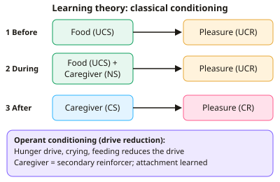

A-level Psychology Year 13 · Topic 18
Child psychology
Child psychology looks at how children's early experiences shape their development.
We will cover attachment theories and types, the effects of deprivation and institutional care, day care and peers, and parenting styles.
Then we look at moral and prosocial development, and at atypical development in autism and ADHD.
- 8 subtopics
- 293 questions
- Free: 18.1 notes and 10 questions
In this topic
- 18.1Theories of attachment: Bowlby's monotropic theory and learning theoryFree below · 43 questions
- 18.2Attachment types and cultural variations: Ainsworth's Strange Situation and cross-cultural researchOpen in Full Marks · 63 questions
- 18.3Effects of early experience: deprivation, privation and institutionalisationOpen in Full Marks · 32 questions
- 18.4Day care, peer relationships and social developmentOpen in Full Marks · 31 questions
- 18.5Parenting styles and influences of family on child developmentOpen in Full Marks · 27 questions
- 18.6Moral and prosocial development in childrenOpen in Full Marks · 30 questions
- 18.7Atypical development: autism spectrum disorder - characteristics, explanations and interventionsOpen in Full Marks · 29 questions
- 18.8Atypical development: ADHD - characteristics, explanations and treatmentsOpen in Full Marks · 38 questions
18.1 · Free notes
Theories of attachment: Bowlby's monotropic theory and learning theory

Key points
- Bowlby (1951, 1969) proposed an evolutionary theory: attachment is innate and adaptive, because infants who stay close to a caregiver are more likely to survive and reproduce.
- Infants are born with social releasers (smiling, crying, cooing, gazing) that trigger caregiving. Adults are biologically prepared to respond, so a bond forms through sensitive responsiveness.
- Monotropy: infants form one special primary attachment figure (usually the mother). This bond is qualitatively different from the others, and the more time spent with this figure, the stronger it is. Other attachments form a hierarchy below it.
- Bowlby suggested a critical period (about the first 2.5 years) for forming the primary attachment. Later work softened this to a sensitive period.
- The internal working model is a mental template of the first attachment: the self as worthy of love and carers as responsive. It guides later relationships, including parenting. The continuity hypothesis links early attachment to later emotional and social outcomes.
- Support for Bowlby: Lorenz (1935) found goslings imprinted on the first moving object. Harlow (1959) found infant monkeys preferred a cloth mother (contact comfort). Hazan and Shaver (1987) found adult romantic attachment styles resemble infant types.
- Criticisms of Bowlby: Schaffer and Emerson (1964) found about 87% of Glasgow infants had multiple attachments by 18 months. Kagan's temperament hypothesis says innate temperament shapes attachment. The internal working model may be too deterministic, since children show resilience.
- Learning theory (Dollard and Miller, 1950) is a behaviourist account, sometimes called cupboard love. Attachment is learned, not innate. Hunger is a primary drive, and the infant seeks to reduce it.
- Classical conditioning: food (UCS) produces pleasure (UCR). The caregiver (NS) is repeatedly paired with food and becomes a CS, producing pleasure (CR). This is why the infant forms an attachment.
- Operant conditioning (drive reduction): crying is reinforced when feeding removes discomfort (negative reinforcement). The caregiver becomes a secondary reinforcer and attachment becomes a secondary drive.
- Evaluation of learning theory: Harlow (1959) found monkeys clung to a cloth mother even though a wire mother gave milk. Schaffer and Emerson found infants attached to the sensitive responder, not the feeder. Learning theory is reductionist. Exam tip: use these studies as evidence, not just assertion.
In more detail
- Worked learning theory: a baby is fed by its mother (food → pleasure). The mother becomes associated with pleasure (classical conditioning), and feeding reduces hunger, so the mother becomes a secondary reinforcer (operant conditioning).
- Harlow (1959): infant rhesus monkeys spent most of their time with a cloth-covered 'mother', even when only a wire 'mother' gave milk, and ran to the cloth mother when frightened.
- Schaffer and Emerson's stages: asocial (0–6 weeks), indiscriminate (about 6 weeks to 7 months), specific (from about 7 months) and multiple attachments (from about 10 months).
- Exam tip: contrast Bowlby (attachment is innate and based on comfort and safety) with learning theory (attachment is learned and based on food).
Practice
Theories of attachment: Bowlby's monotropic theory and learning theory: 10 questions
Pick an answer to check it, or open the answer for the explanation.
1. Which term describes Bowlby's claim that infants form one uniquely important attachment, usually with the mother?
- Monotropy
- Imprinting
- Social releasing
- Cupboard love
Show answer
A: Monotropy. Monotropy is Bowlby's idea of a single primary attachment that is qualitatively different from others. Imprinting is Lorenz's term and cupboard love is learning theory.
2. A newborn's crying and smiling prompt adults to pick her up and talk to her. Bowlby would call these behaviours:
- Secondary reinforcers
- Unconditioned stimuli
- Social releasers
- Internal working models
Show answer
C: Social releasers. Social releasers are innate behaviours that trigger caregiving and so promote attachment, an adaptive process in Bowlby's evolutionary theory.
3. What is the main function of the internal working model in Bowlby's theory?
- A reflex that keeps infants close to food
- A stage in which infants copy their carers
- A template for relationships shaping later expectations
- A drive that is reduced by feeding
Show answer
C: A template for relationships shaping later expectations. The internal working model is a mental representation of the first attachment. It guides expectations in later friendships, romantic relationships and parenting.
4. Bowlby proposed that the critical period for forming a primary attachment lasts until about what age?
- 2.5 years
- 7 years
- 1 year
- 6 months
Show answer
A: 2.5 years. Bowlby suggested the critical period lasts to about 2.5 years. It was later softened to a sensitive period of up to about 5 years.
5. Baby Zara first smiled only when fed. She now smiles when she sees her father. In classical conditioning terms, her father is now a:
- Neutral stimulus
- Conditioned response
- Unconditioned stimulus
- Conditioned stimulus
Show answer
D: Conditioned stimulus. The father was a neutral stimulus paired with food (UCS). He has become a conditioned stimulus that produces pleasure (the conditioned response).
6. According to Dollard and Miller, why does an infant become attached to a caregiver?
- The caregiver triggers an innate imprinting response
- The infant builds an internal working model
- The infant is punished when the caregiver leaves
- The caregiver becomes a secondary reinforcer linked to food
Show answer
D: The caregiver becomes a secondary reinforcer linked to food. In learning theory, the caregiver is associated with food, a primary reinforcer, so the caregiver becomes a secondary reinforcer and attachment is learned.
7. Harlow's monkeys clung to a cloth mother and visited a wire mother only to feed. Which theory does this most directly challenge?
- Social releasers
- The critical period
- Learning theory
- Monotropy
Show answer
C: Learning theory. If attachment were simply cupboard love, monkeys would prefer the feeding mother. They preferred contact comfort, which challenges learning theory.
8. Schaffer and Emerson (1964) found infants were most strongly attached to the person who:
- spent the most hours with them
- responded most sensitively to them
- changed and bathed them
- fed them most often
Show answer
B: responded most sensitively to them. Attachment was to the sensitive responder, not necessarily the feeder. This challenges learning theory and supports Bowlby's emphasis on sensitivity.
9. In a study of 60 infants, 52 had formed multiple attachments by 18 months. What percentage is this, to the nearest whole number?
- 92%
- 13%
- 52%
- 87%
Show answer
D: 87%. 52 ÷ 60 × 100 = 86.7%, so about 87%. This suggests infants form multiple attachments, challenging a strict view of monotropy.
10. Kagan's temperament hypothesis criticises Bowlby by suggesting that:
- a critical period ends at 7 years
- attachment is learned through food
- innate infant temperament may shape attachment quality
- fathers are always the primary attachment
Show answer
C: innate infant temperament may shape attachment quality. Kagan argued that an infant's inborn temperament, rather than only caregiver behaviour, may explain differences in attachment quality.
Keep going in Full Marks
Full Marks has 43 questions on Theories of attachment: Bowlby's monotropic theory and learning theory (33 more than here), set out in practice levels. You also get notes and 3D models for all 8 subtopics of Child psychology, plus games, timed exams and past papers.
On your exam board
Not in the AQA and Cambridge specifications.